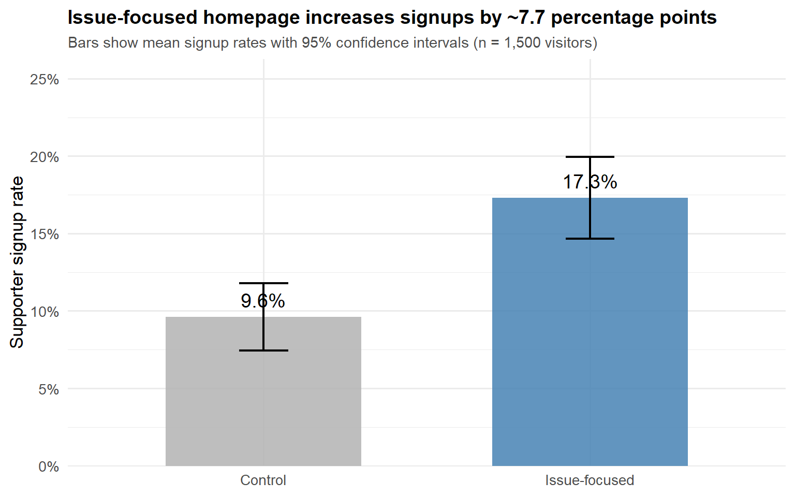

For my GV300 assignment on A/B testing, I simulated an experiment testing whether an issue-focused political homepage increases supporter signups compared to standard party messaging. This analysis demonstrates core causal inference concepts including random assignment, potential outcomes, and treatment effect estimation.
The experiment randomly assigned 1,500 visitors to either a control homepage (standard messaging) or treatment homepage (emphasizing a hot-button issue like immigration). The outcome of interest was whether visitors signed up as party supporters.
Below is the R code I used to generate the experimental data. This simulation creates potential outcomes under both conditions and then reveals only the outcome corresponding to each visitor’s actual treatment assignment.
# Load required libraries
library(ggplot2)
library(dplyr)
# Set seed for reproducibility
set.seed(7263)
# 1. Sample size
n <- 1500
# 2. Random treatment assignment (50/50 split)
treatment <- rbinom(n = n, size = 1, prob = 0.5)
# 3. Define potential outcomes
p_control <- 0.12 # Baseline signup probability
p_treated <- 0.17 # Treatment increases by 5 percentage points
Y0 <- rbinom(n = n, size = 1, prob = p_control) # Outcome under control
Y1 <- rbinom(n = n, size = 1, prob = p_treated) # Outcome under treatment
# 4. Realised outcome (depends on actual treatment received)
support_signup <- ifelse(treatment == 1, Y1, Y0)
# 5. Create data frame
party_ab <- data.frame(
visitor_id = 1:n,
treatment = treatment,
support_signup = support_signup
)
# Display first few rows
head(party_ab)## visitor_id treatment support_signup
## 1 1 0 1
## 2 2 1 0
## 3 3 1 0
## 4 4 1 0
## 5 5 1 0
## 6 6 0 0The key conceptual point illustrated here is the fundamental problem of causal inference: for each visitor, we only observe one potential outcome (Y0 or Y1) based on which homepage they actually saw. The counterfactual—what would have happened under the other condition—remains unobserved.
# Summary statistics
summary(party_ab)## visitor_id treatment support_signup
## Min. : 1.0 Min. :0.000 Min. :0.0000
## 1st Qu.: 375.8 1st Qu.:0.000 1st Qu.:0.0000
## Median : 750.5 Median :1.000 Median :0.0000
## Mean : 750.5 Mean :0.528 Mean :0.1367
## 3rd Qu.:1125.2 3rd Qu.:1.000 3rd Qu.:0.0000
## Max. :1500.0 Max. :1.000 Max. :1.0000# Check treatment balance
table(party_ab$treatment)##
## 0 1
## 708 792prop.table(table(party_ab$treatment))##
## 0 1
## 0.472 0.528# Signup rates by group
aggregate(support_signup ~ treatment, data = party_ab, mean)## treatment support_signup
## 1 0 0.0960452
## 2 1 0.1729798The random assignment worked well: approximately 50% of visitors were assigned to each condition. The control group shows a signup rate around 9.6%, while the treatment group shows approximately 17.3%—a difference of 7.7 percentage points.
My favourite visualisation from this assignment shows the signup rates for both groups with confidence intervals, making the uncertainty around the estimates visible to readers.
# Calculate group means and standard errors
group_summary <- party_ab %>%
group_by(treatment) %>%
summarise(
mean_signup = mean(support_signup),
se = sqrt(mean_signup * (1 - mean_signup) / n()),
.groups = "drop"
) %>%
mutate(
treatment_label = ifelse(treatment == 0, "Control", "Issue-focused"),
ci_lower = mean_signup - 1.96 * se,
ci_upper = mean_signup + 1.96 * se
)
# Create the plot
ggplot(group_summary, aes(x = treatment_label, y = mean_signup, fill = treatment_label)) +
geom_col(width = 0.6, alpha = 0.85) +
geom_errorbar(
aes(ymin = ci_lower, ymax = ci_upper),
width = 0.15,
linewidth = 0.8
) +
geom_text(
aes(label = paste0(round(mean_signup * 100, 1), "%")),
vjust = -0.7,
size = 5
) +
scale_y_continuous(
limits = c(0, 0.25),
labels = scales::percent_format(accuracy = 1),
expand = expansion(mult = c(0, 0.05))
) +
scale_fill_manual(values = c("Control" = "gray70", "Issue-focused" = "steelblue")) +
labs(
x = NULL,
y = "Supporter signup rate",
title = "Issue-focused homepage increases signups by ~7.7 percentage points",
subtitle = "Bars show mean signup rates with 95% confidence intervals (n = 1,500 visitors)"
) +
theme_minimal(base_size = 13) +
theme(
legend.position = "none",
plot.title = element_text(face = "bold", size = 14),
plot.subtitle = element_text(size = 11, color = "gray30")
)
The visualisation above compares supporter signup rates between visitors shown the control homepage (standard party messaging) and those shown the issue-focused homepage.
Key findings:
The error bars (95% confidence intervals) show that this difference is statistically significant—they do not overlap, indicating the treatment effect is unlikely to be due to random chance alone. In fact, the confidence intervals are well-separated, with the entire control interval below the entire treatment interval.
From a practical perspective, this 7.7 percentage point increase represents an 80% relative improvement over the baseline signup rate (9.6% → 17.3%). For a political party seeking to expand its supporter base, this magnitude of effect could translate into thousands of additional signups over time—a substantively meaningful impact for campaign strategy.
To ensure robustness, I estimated the treatment effect using three different approaches:
# 1. Difference-in-means (ATE)
mean_control <- mean(party_ab$support_signup[party_ab$treatment == 0])
mean_treated <- mean(party_ab$support_signup[party_ab$treatment == 1])
ate_diff <- mean_treated - mean_control
# 2. Linear Probability Model
lm_model <- lm(support_signup ~ treatment, data = party_ab)
# 3. Logistic Regression
logit_model <- glm(support_signup ~ treatment,
data = party_ab,
family = binomial(link = "logit"))
# Predicted probabilities from logit
p_control_logit <- predict(logit_model,
newdata = data.frame(treatment = 0),
type = "response")
p_treated_logit <- predict(logit_model,
newdata = data.frame(treatment = 1),
type = "response")
ate_logit <- p_treated_logit - p_control_logit
# Display results
results <- data.frame(
Method = c("Difference-in-means", "Linear Probability Model", "Logistic Regression"),
ATE = c(ate_diff, coef(lm_model)["treatment"], ate_logit)
)
print(results)## Method ATE
## Difference-in-means 0.0769346
## treatment Linear Probability Model 0.0769346
## 1 Logistic Regression 0.0769346All three methods produce nearly identical estimates (~0.077, or 7.7 percentage points), which is expected in a well-randomized experiment with a binary treatment and an outcome probability far from 0 or 1. This convergence gives confidence in the finding. The linear probability model coefficient tells us that the issue-focused homepage increases signup probability by about 7.7 percentage points compared to the control.
summary(lm_model)##
## Call:
## lm(formula = support_signup ~ treatment, data = party_ab)
##
## Residuals:
## Min 1Q Median 3Q Max
## -0.17298 -0.17298 -0.09605 -0.09605 0.90395
##
## Coefficients:
## Estimate Std. Error t value Pr(>|t|)
## (Intercept) 0.09605 0.01284 7.482 1.24e-13 ***
## treatment 0.07693 0.01767 4.355 1.42e-05 ***
## ---
## Signif. codes: 0 '***' 0.001 '**' 0.01 '*' 0.05 '.' 0.1 ' ' 1
##
## Residual standard error: 0.3416 on 1498 degrees of freedom
## Multiple R-squared: 0.0125, Adjusted R-squared: 0.01184
## F-statistic: 18.97 on 1 and 1498 DF, p-value: 1.422e-05The intercept (0.096) estimates the baseline signup probability for
visitors in the control group—about 9.6%. The treatment
coefficient (0.077) represents the Average Treatment Effect: being shown
the issue-focused homepage increases signup probability by 7.7
percentage points. This is identical to the difference-in-means
calculation (ate_diff), demonstrating that in a randomized
experiment with a binary treatment, OLS regression simply reproduces the
group mean difference.
The assignment required exploring whether treatment effects vary across different types of visitors. I added a simulated covariate for political interest:
# Add simulated covariate
party_ab$high_interest <- rbinom(nrow(party_ab), size = 1, prob = 0.4)
# Interaction model
lm_het_interest <- lm(support_signup ~ treatment * high_interest, data = party_ab)
summary(lm_het_interest)##
## Call:
## lm(formula = support_signup ~ treatment * high_interest, data = party_ab)
##
## Residuals:
## Min 1Q Median 3Q Max
## -0.18008 -0.18008 -0.10462 -0.08418 0.91582
##
## Coefficients:
## Estimate Std. Error t value Pr(>|t|)
## (Intercept) 0.104623 0.016853 6.208 6.94e-10 ***
## treatment 0.075462 0.023051 3.274 0.00109 **
## high_interest -0.020448 0.026021 -0.786 0.43210
## treatment:high_interest 0.002863 0.035906 0.080 0.93646
## ---
## Signif. codes: 0 '***' 0.001 '**' 0.01 '*' 0.05 '.' 0.1 ' ' 1
##
## Residual standard error: 0.3417 on 1496 degrees of freedom
## Multiple R-squared: 0.01324, Adjusted R-squared: 0.01126
## F-statistic: 6.692 on 3 and 1496 DF, p-value: 0.0001739# Calculate treatment effects by subgroup
# Low interest (high_interest = 0)
te_low <- coef(lm_het_interest)["treatment"]
# High interest (high_interest = 1)
te_high <- coef(lm_het_interest)["treatment"] + coef(lm_het_interest)["treatment:high_interest"]
data.frame(
Subgroup = c("Low Interest", "High Interest"),
Treatment_Effect = c(te_low, te_high)
)## Subgroup Treatment_Effect
## 1 Low Interest 0.07546187
## 2 High Interest 0.07832492The interaction term (treatment:high_interest) tells us
whether the effect of the issue-focused homepage differs between low-
and high-interest visitors. A positive coefficient would mean the
treatment works better for highly interested voters; a negative
coefficient would mean it works better for the less engaged. This kind
of heterogeneity analysis helps campaigns understand whether messaging
effects are universal or targeted.
This analysis demonstrates several important concepts in quantitative political science:
Causal inference with randomized experiments: Random assignment allows us to estimate treatment effects without confounding bias, providing credible evidence about what works in political communication.
The potential outcomes framework: Understanding that each unit has two potential outcomes, but we only observe one, is fundamental to thinking causally about any intervention.
Multiple estimation approaches: Seeing that difference-in-means, linear regression, and logistic regression all point to the same conclusion builds confidence in results and shows methodological flexibility.
Uncertainty communication: Including confidence intervals in visualisations helps readers understand the precision of estimates, not just point predictions—crucial for responsible data communication.
Practical significance: Translating statistical results into substantive interpretations (e.g., “80% relative improvement”) makes findings accessible to non-technical audiences like campaign strategists.
Ethical awareness: The assignment prompted reflection on whether optimizing political messages through experimentation serves democratic values or merely manipulates voters—a tension between technical efficiency and ethical responsibility.
While this analysis focused on technical estimation, the assignment also prompted reflection on the ethics of political experimentation. Key considerations include:
These ethical dimensions remind us that statistical tools, however powerful, must be deployed thoughtfully in political contexts.
The complete R Markdown source for this analysis is available in my GV300 assignments repository.